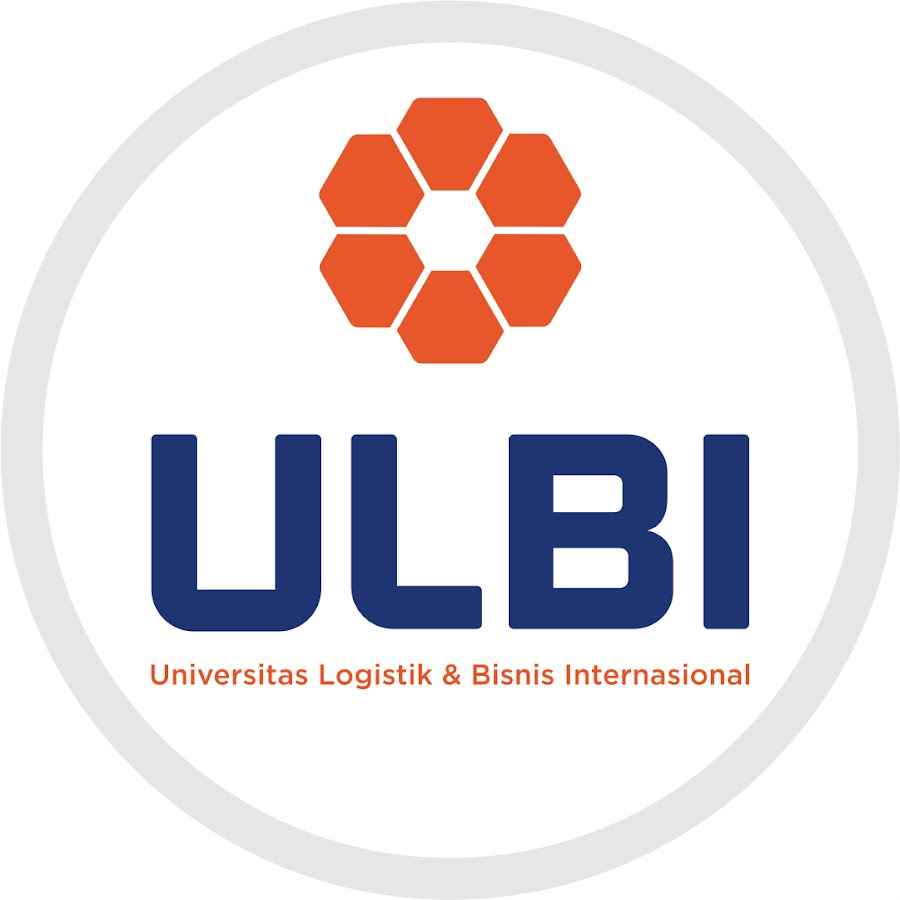

PENDIDIKAN
pada sekolah dasar aku bersekolah di salah satu sekolah dasar di daerah aku, namanya sekolah dasar negeri 23 oku aku nersekolah disana selama 6 tahun dari umur 6 tahun juga disana aku memiliki masa lalu yang sangat asyik enak ya jadi anak kecil dulu bilang nya mau cepet cepet gede giliran udah gede mau balik lagi jadi kecil dulu mah nggak ada tuh yang dipikirin abis sekolah mandi sungai main 24/7 hari pengalaman masa kecil yang indah ya main kelereng dan segala macem.

setelah aku menyelesaikan pendidikan di jenjang sekolah dasar dengan memperoleh nilai un yang cuku tinggi yaitu 27,00 dan mendapatkan peringkat ke empat dari satu angkatan itu salah satu perolehan yang sangat aku banggakan setelah itu aku melanjutkan study di sekolah agama atau disebut pondok pesantren disana aku mendapatkan banyka ilmu agama tentang pentingnya dalam membangun agama dalam diri seseorang dan disana aku banyak belajar tentang hina nya kehidupan dan aku juga banyak belajar tentang bagaimana hidup jauh dari orang tua pada masa smp ini nilai pendidkan aku menurun pada tahun pertama aku masih mendapatkan nilai yang cukup baik hingga naik tingkatan nilai pendidikan aku menurun sampai aku pernah menduduki peringkat 21 di kelas dan memeperoleh nilai UN yang sangat sad.

setelah itu aku juga melanjutkan sekolah menegah atas di tempat yang sama yaitu pondok pesantren Riyadhussholihiin dan di sma ini banyak kenangan yang manis yang tak ingin aku lupakan dan di sma ini lebih banyak mengikuti organisasi deperti aku pernah menjabat di bagian ketua koor kebersihan di sekolah aku dan juga menjabat sebagai sekretaris OSIS SMAS Riyadhussholihiin selama satu tahun aku juga pernah menjabat menjabat menjadi sekretaris di angkatan aku salah satu event yang pernah aku adakan yaitu bakti sosial dengan jumlah pendapatan sampai 30 juta lebih alhamdulillah dan sampai sekarang aku masih ingat kenangan masa itu terima kasih.
dan sekarang aku sedang melanjutkan study di salah satu collage di bandung yaitu universitas logistik dan bisnis international mengambil prodi d4 tehnik informatika semoga aku dapat menyelesaikan pendidikan kali ini dengan cepat amin.
